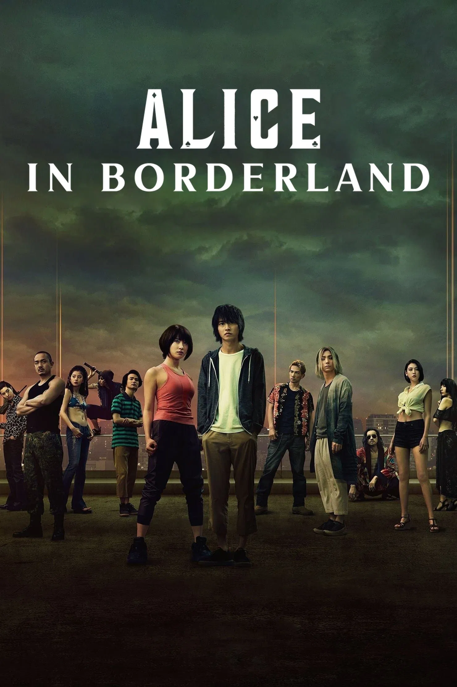

NOW SHOWING

ALICE IN BORDERLAND
Genre: Science Fiction, Thriller, Survival, Action, Psychological Drama, Dystopian
Director: Haro Aso
Cast: Kento Yamazaki, Tao Tsuchiya, Nijirō Murakami, Aya Asahina etc.
Follows a disillusioned young man as he’s thrust into a deadly world of games where intellect means survival. In a city stripped of rules and mercy, he becomes the embodiment of logic, empathy, and human resilience in a system designed to erase all three.
Available in: 2D, 3D
See Trailer